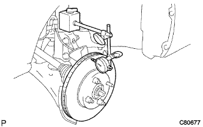

Front brake inspection |
| 1. Disc brake piston and cylinder inspection |
Inspect that there is no damage on the side and inside the disc brake piston.
| 2. Disc brake pad thickness inspection |
| 3. Front disc brake pad support plate No.1 inspection |
Front disc brake brake cylinder mounting LH, cleaning the disk brake pad hitting surface with brake cleaners, etc. When the front disc brake pad support plate No. 1 is installed, looseness, deformation, cracks, rust, and difficult to remove it.Check for foreign substances.
When attaching the disc brake pad, check that the front disc brake pad support plate No. 1 has spring power, and after installation, the front disc brake pad does not easily drop off.
| 4. Front disc brake pad support plate No.2 inspection |
| 5. Disk thickness inspection |
| 6. Remove the front disc |
| 7. Installation of the front disc |
Match the front disk and the front axle hub matching mark and attach the front disc.
| 8. Disk swing inspection |
Before checking the front disk swing, check the back of the front wheel bearing and the swing of the front axle hub.
With a hub nut, fix the front disk.
|  |
Use the dial gauge to check the swing inside 10 mm from the outer periphery of the front disc.